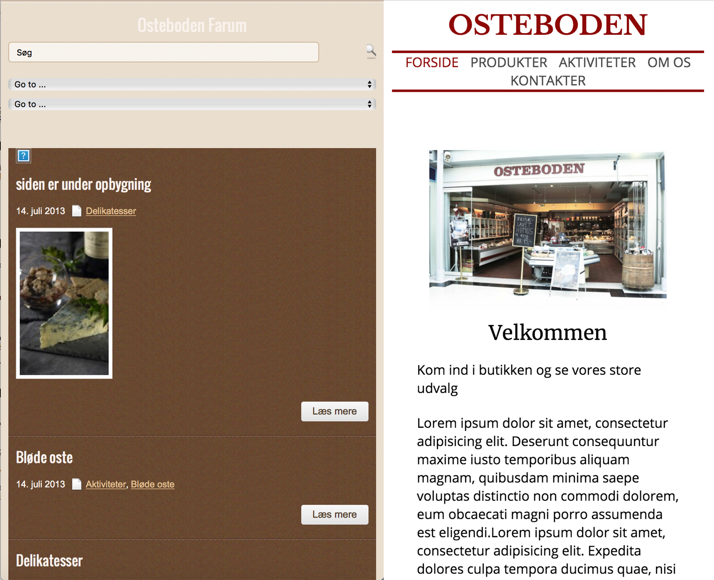
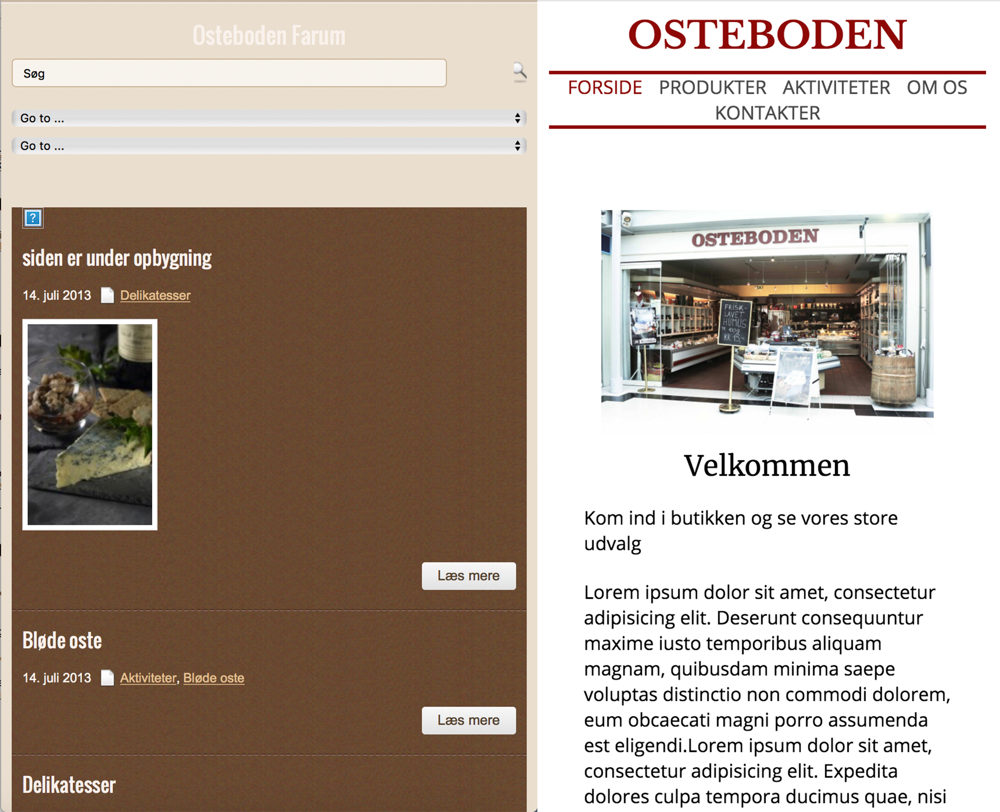

I dette tema lærte vi at lave korte videoer og lægge dem ud på nettet. Vi benyttede os af video-kameraer, microfoner og Adobes Premiere Pro.
Emner
I dette tema blev vi bl.a. introduceret i følgende:
- interviewstekniker
- kamera-indstillinger
- optagelses- og redigerings-teknikker (video og lyd)
Opgaver
Vi blev introduceret for 2 video-opgaver
- markedsføringsvideo: Præsentationsvideo af en virksomhed
- reportagevideo: CPH DOX projektet
Derudover var der koblet en redesign-opgave på Præsentationsvideo
 
